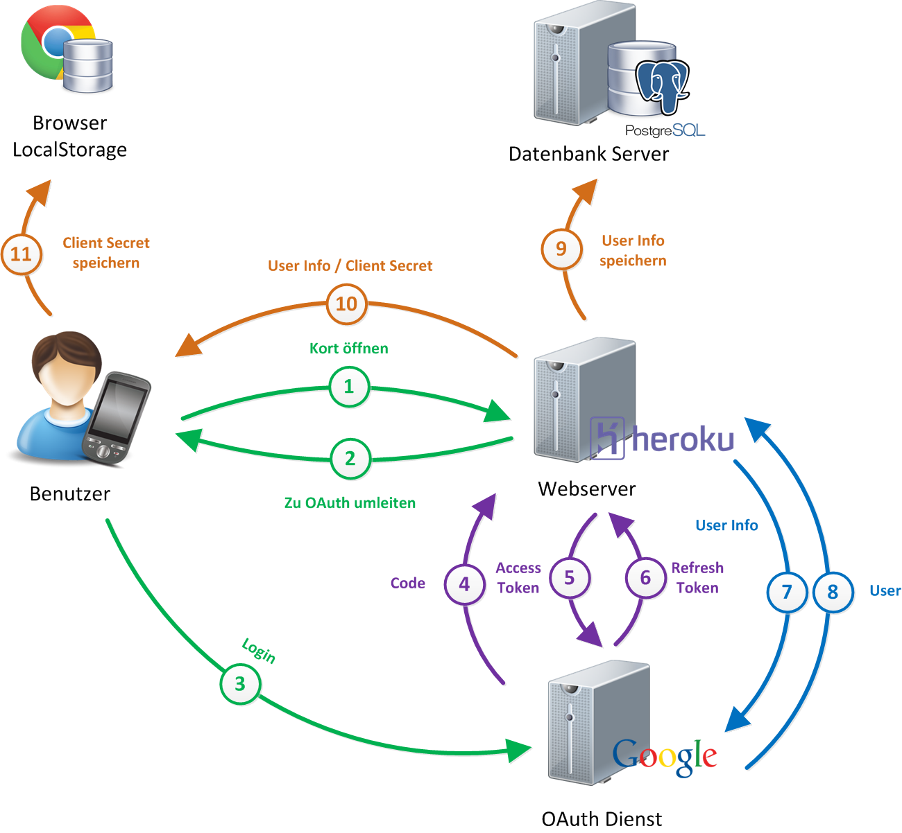
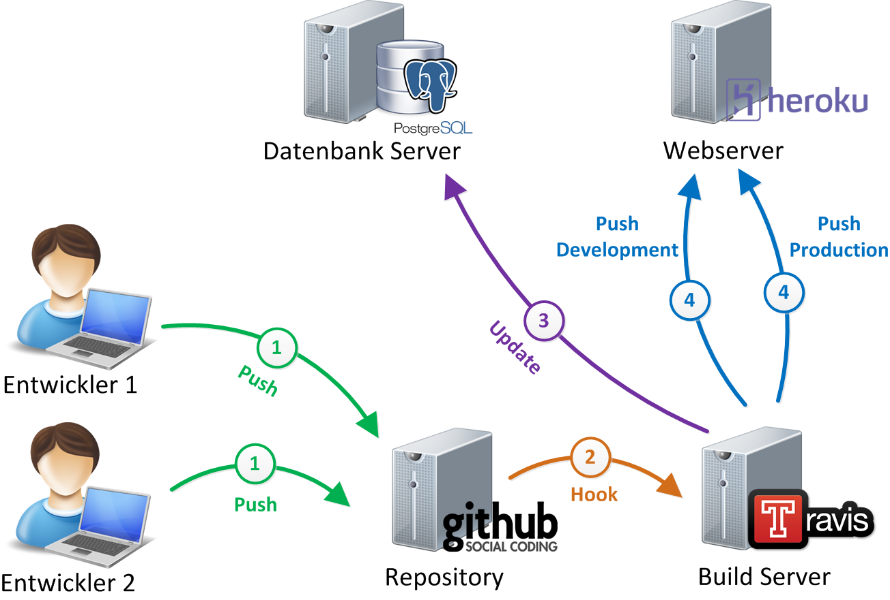

Kort
Gamified Mobile App zur Verbesserung von OpenStreetMap
- Arbeit:
- Bachelorarbeit HS2012/13
- HSR Hochschule für Technik Rapperswil
- Entwickler:
- Jürg Hunziker (@tschortsch85)
- Stefan Oderbolz (@odi)
15. Januar 2013
Le Team

Jürg Hunziker
- Webentwickler, Stadt Winterthur
- Interessen: Design, Webtechnologien
- Fokus: Frontend-Entwicklung
- Twitter: @tschortsch85
Stefan Oderbolz
- Webentwickler, Liip AG Zürich
- Interessen: Automatisierung, Architektur
- Fokus: Backend-Entwicklung
- Twitter: @odi
Tweet about it!
#kort
Ziele der Arbeit
- Cross-platform WebApp
- OpenStreetMap-Daten korrigieren
- Vorhandene Benutzer-Basis verwenden
- Gamification
Kort
- WebApp auf Basis von HTML5 und JavaScript
-
OpenStreetMap-Fehler
- Auf Karte darstellen
- Beheben
- Lösungen validieren
- Crowdsourcing
-
Gamification
- Punkte (Koins)
- Highscore
- Auszeichnungen
Demo
Überblick

Cross-platform WebApp
- Sencha Touch 2 Framework
- JavaScript Framework für Web-Applikationen
- Verwendet Web Standards (HTML5, CSS3)
- Touch Events
- Unterstützung für WebKit-Browser
- Mobile: iOS, Android, BlackBerry
- Desktop: Chrome, Opera, Safari
Login (OAuth)
- Standard für Authentifizierung
- Freigabe von Daten oder Diensten
- Benutzerinformationen (Email, Name)
- Kalender
- usw.

Fehlerquellen
Anforderungen
- Für Nicht-Mapper lösbar
- Übersetzbar -> Müssen Schema folgen
- Nur Fehler in Metadaten von OSM
- Ein betroffnener Tag pro Fehler
- Automatisiert UI zur Lösungseingabe erstellen
Fehlerquellen
- Direkt aus OpenStreetMap
- FIXME-Tags
- OpenStreetBugs
- KeepRight
- MapDust
- Housenumbervalidator
Fehlerquellen
Entscheid KeepRight
- Erstellt durch automatisierten Job
- Daten werden als Dump-File angeboten
- Lösungen nur zu OSM zurückschreiben
Deployment

Probleme
- Nicht genügend Fehlerdaten ;-)
- Gamification zeitaufwändig
- Zurückschreiben der validierten Lösungen
Zurückschreiben der Lösungen
- OSM Stammtisch
- Technische Benutzer nicht erlaubt (?)
- Fehlende Zeit
- Übergangslösung: www.kort.ch
TODO
- Bilder von Smartphones (then and now)
- Ext.ux.LeafletMap
- Infrastruktur
- Gamification
Pretty Code
function linkify( selector ) {
if( supports3DTransforms ) {
var nodes = document.querySelectorAll( selector );
for( var i = 0, len = nodes.length; i < len; i++ ) {
var node = nodes[i];
if( !node.className ) ) {
node.className += ' roll';
}
};
}
}
Courtesy of highlight.js.
Fragmented Views
Hit the next arrow...
... to step through ...
any type- of view
- fragments
Fragment Styles
There's a few styles of fragments, like:
grow
shrink
roll-in
fade-out
highlight-red
highlight-green
highlight-blue
Take a Moment
Press b or period on your keyboard to enter the 'paused' mode. This mode is helpful when you want to take disctracting slides off the screen during a presentation.